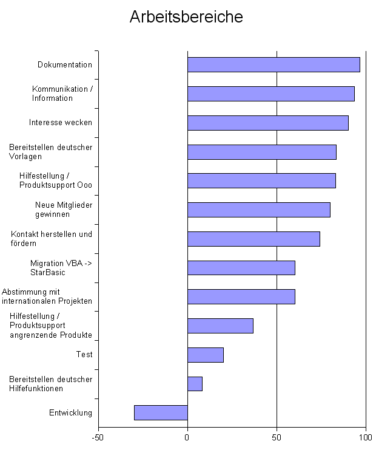

Zusammenfassung der Diskussionen vom 22.10. - 28.10.2002
Es begann mit dem Vorwurf, dass die Arbeit beim deutschen Sprachprojekt
von OpenOffice.org nicht effektiv ist und wir nach außen hin durch viele
Diskussionen, die nichts mit OpenOffice.org zu tun haben wie ein Kindergarten
wirken. Daraufhin startete eine lebhafte Diskussion mit über 300 Beiträgen,
in der viele neue Ideen aufkamen, die es jetzt umzusetzen gilt. Im Folgenden
möchte ich die Diskussion kurz zusammenfassen, um einen Überblick zu
verschaffen. Ich versuche die Zusammenfassung so kurz wie möglich zu machen,
damit es wirklich jeder lesen kann.
Gegliedert ist die Zusammenfassung nach den diskutierten Themen.
Bitte unbedingt die ToDo-Liste ansehen, die sich aus diesen
Diskussionen ergibt. Denn nur vom Diskutieren kommen wir bekanntlich nicht
weiter :-)
Wie können wir die Effektivität unserer Arbeit steigern?
Dazu möchten wir folgende Punkte umsetzen:
Wir sollten unsere Energie bündeln, um schneller Ergebnisse präsentieren zu können
Da Vorgänge sehr lange dauern, wenn einer allein daran arbeitet, sollten wir
versuchen, dass möglichst viele an einem Projekt, z.B. der Vorlagengestaltung
arbeiten. Dadurch bekommen wir vorzeigbare Ergebnisse und wenn wir in der
nächsten Version Vorlagen mitliefern, in der übernächsten Version Dokumentation
usw. macht das in der Presse einen viel besseren Eindruck als wenn wir in der
überübernächsten Version Vorlagen und ein Handbuch mitliefern.
Für die users@de.openoffice.org-Mailingliste sollte eine FAQ erstellt werden
Diese Maßnahme hilft dabei, die Fragen nicht 10x beantworten zu müssen. Da
für die Newsgruppen de.comp.office-pakete.staroffice.ALL (die in den Chartas
OpenOffice.org als On-Topic definieren) bereits eine FAQ erstellt wird, sollte
man zusammenarbeiten, um keine Energie zu verschwenden.
Es soll Ansprechpartner für die verschiedenen Bereiche geben
Diese Ansprechpartner sorgen dafür, dass in dem entsprechenden Bereich
möglichst effektiv gearbeitet wird und fassen die Aktivitäten in regelmäßigen
Abständen, z.B. monatlich, zusammen.
Wie können wir nach außen ein besseres Bild abgeben?
Da wir nach außen noch kein richtig gutes Bild abgeben, wurden folgende
Maßnahmen beschlossen:
Die Website muss übersichtlicher werden
(durch die Neustrukturierung wurde das zu einem großen Teil bereits
umgesetzt)
Die Regeln für die users@de.openoffice.org-Mailingliste müssen vereinfacht
werden
Es wirkt unprofessionell, wenn sich die Diskussion zu oft um die Regeln
statt um die Probleme dreht. Die derzeit verwendeten Regeln von
www.suse-etikette.de.vu
sind zu umfangreich, sodass sie viele Neulinge gar nicht erst lesen. Dennoch
sind einige Regeln für eine gute Kommunikation nötig, die erstellt werden
müssen.
Der Umgangston auf users@de.openoffice.org muss besser werden
Es sollten die Anfragen freundlich beantwortet werden, auch wenn vom
Fragesteller nicht alle Regeln erfüllt wurden. Auf die Regeln sollte nur in
einem Nebensatz und ebenfalls freundlich hingewiesen werden. Mit diesem
goldenen Mittelweg wollen wir erreichen, dass die Liste einen guten Ruf
bekommt.
Es soll evtl. eine Firmenliste eingerichtet werden
Es wird überlegt, ob nicht eine eigene Support-Mailingliste nur für Firmen
eingerichtet werden soll, um diesen nicht den hohen Traffic von der
users-Mailingliste zumuten zu müssen. Da es für diese Liste aber gute
Pro- und gute Contra-Argumente gibt, ist die Einrichtung noch nicht
beschlossen.
Es soll evtl. ein Pilotprojekt gestartet werden
Dieses würde in Partnerschaft mit einer Firma stattfinden: die Firma setzt
OpenOffice.org ein und nutzt bei Fragen unsere Supportwege. Dabei soll sie
uns bei der Verbesserung der selbigen zu helfen.
Es sollen mehr vorzeigbare Ergebnisse erzielt werden
(siehe oben)
An welche Zielgruppen richten wir uns?
Die Diskussion hat ergeben, dass unsere Manpower nicht ausreicht, verschiedene
Zielgruppen differenziert zu behandeln. Grundsätzlich sollten wir aber beim
Privatanwender anfangen, da für Firmen (und angeblich auch für Schulen)
eine Datenbankanbindung wichtig ist. Trotzdem möchten wir auch im Schulbereich
etwas Marketing betreiben, da Linux ja auch über Schüler und Studenten in die
Firmen gekommen ist. Wir benötigen allerdings noch Schulungsunterlagen, um
Schulen den Einsatz zu ermöglichen.
Wie können wir neuen Mitgliedern den Einstieg erleichtern?
Es ist ziemlich schwierig, bei uns einzusteigen, weil man mit sehr vielen
Dingen (wie Mailinglisten, IssueZilla, CVS) konfrontiert wird. Um den Einstieg
einfacher zu machen müssen wir die Seite "Mithelfen, aber wie?" überarbeiten
und entsprechende leicht nachvollziehbare Anleitungen zur Verfügung stellen.
Was wollen wir?
Wir haben darüber abgestimmt, welche Arbeitsbereiche uns wichtig sind. Über
das Ergebnis hat uns André mit einem schönen Diagramm informiert:
